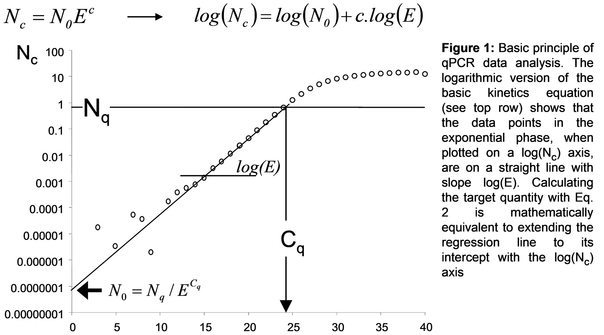
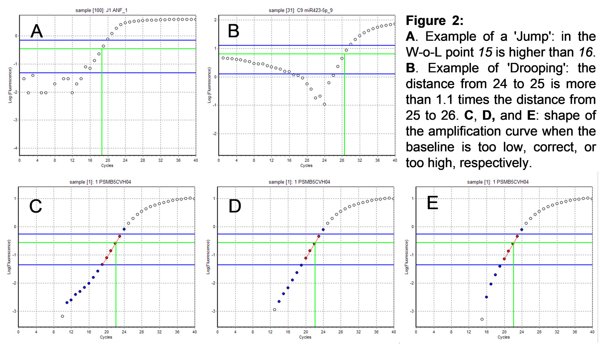

Contact
Table of Contents
- 1. Introduction
- 2. Basic RDML Tools
- 3. RDML-LinRegPCR
- 3.1. Introduction
- 3.2. A Word of Caution
- 3.3. LinRegPCR References
- 3.4. Definitions of Terms Used in This Manual
- 3.5. Theory Behind the LinRegPCR Program
- 3.6. Baseline Estimation and Error Flagging
- 3.7. Mean Efficiency Calculation
- 3.8. Window-of-Linearity and Quantification Threshold
- 3.9. Differences Between Pascal and Python Version
- 3.10. Importance of the information in RDML files
- 3.11. Run LinRegPCR
- 4. RDML-Analyze
1. Introduction
1.1. General Introduction
The Real-time PCR Data Markup Language (RDML) is a structured and
universal data standard for exchanging quantitative PCR (qPCR) data and digital PCR (dPCR) data. The data standard
should contain sufficient information to understand the experimental setup, re-analyse the data and interpret the
results. It was designed to enable transparent exchange of annotated qPCR data between instrument software and
third-party data analysis packages, between colleagues and collaborators, and between authors, peer reviewers,
journals and readers.
The RDML-Tools center around the
RDML data format. The
RDML-Tools mainly provide a web page
access to the functions of the
RDML-Python library, designed to
create and handle RDML files and their dependencies. The
RDML-Python library also offers
advanced analysis programs like LinRegPCR and MeltCurveAnalysis MeltCurveAnalysis
to analyze the fluorescence data in the RDML files and provide biological or clinical results.
Users may choose to install the library as a
python package calling
"python -m pip install rdmlpython". All software is GPL licensed except the RDML-Python library being MIT
licensed.
Andreas Untergasser (Zentrum für Molekulare Biologie, University of Heidelberg, Germany; Genome Core,
EMBL, Heidelberg, Germany), Maurice van den Hoff and Jan Ruijter (both Department of Medical Biology,
Amsterdam UMC, location, AMC, Amsterdam)
1.2. RDML Data Standard
The RDML data standard is a compressed
text file in Extensible Markup Language (XML). By design, it collects the information of different experimenters,
dyes, samples, targets and thermal cycling conditions separately to experiment/run information, were this
information is only referenced by the unique ID. In a final RDML file, for example, one target might be
referenced many times. The RDML-Tools and RDML-Python library were created to handle these dependencies and
allow modification of an ID without having to update all the occurrences in the experiment.
RDML evolved over the years and there are several versions available today. The RDML-Tools can convert between
the versions. Upload the file to RDML-Edit, activate the edit mode on the main tab and the migration buttons
become available on the “more” tab. Version 1.0 is automatically converted to version 1.1, the lowest supported
version by the RDML-Tools. Newer versions offer new and may remove obsolete functionality. Be aware that
digital PCR is only supported from RDML version 1.3 onwards.
RDML was first published in
"RDML: structured language and
reporting guidelines for real-time quantitative PCR data in 2009 (Lefever et al., 2009 Nucleic Acids Res.
37(7):2065-2069. (doi: 10.1093/nar/gkp056 or PMID: 19223324))". Version 1.2 and the database RDMLdb were
introduced in "RDML-Ninja and RDMLdb for
standardized exchange of qPCR data in 2015 (Ruijter et al., 2015 BMC Bioinformatics 16:197.
(doi: 10.1186/s12859-015-0637-6 or PMID: 26087842)".
1.3. License
Please read the Terms of Use before using the RDML-Tools and please obey to the requirements. The individual licenses are found in the respective GitHub repositories. The RDML-Tools mainly provide a web page access to the functions of the RDML-Python library, designed to handle RDML files and their dependencies. Users may choose to install the library as a python package calling "python -m pip install rdmlpython". All software is GPL licensed except the RDML-Python library being MIT licensed.
1.4. How to Cite
We request but do not require that use of this software be cited in publications as
Web-based LinRegPCR: application for the visualization and analysis of (RT)-qPCR
amplification and melting data.
Untergasser A, Ruijter JM, Benes V, van den Hoff MJB.
BMC Bioinformatics. 2021 Aug 24;22(1):398. doi: 10.1186/s12859-021-04306-1.
The paper is available at
https://bmcbioinformatics.biomedcentral.com/articles/10.1186/s12859-021-04306-1
Source code available at
https://github.com/RDML-consortium/rdml-tools.
1.5. The Python Library rdmlpython and the Command Line
The rdml-tools are great to analyze single files and view the result. Behind the scenes the RDML-tools do no calculations. They shape the input, hand it over to the server, the server does the calculations using the python library rdmlpython, collects the results and hands them to the rdml-tools which display the results and allow to browse them interactively. If big files or a large number of files have to be analyzed or due to privacy reasons the data may not run on external servers, running rdmlpython locally via the command line interface might be an option. Programmers may use rdmlpython to handle RDML files in their own applications.
Installing rdmlpython
apt install python3 python3-pip
pip3 install rdmlpython
The Command Line InterfaceSome functions of rdmlpython are available on the command line.
Display the help with an overview of the possible commands:
rdmlpython -h
rdmlpython --help
Display the version number of rdmlpython:
rdmlpython --version
Validate file data.rdml against its schema:
rdmlpython -v data.rdml
rdmlpython --validate data.rdml
List all experiments in the file data.rdml:
rdmlpython -le data.rdml
rdmlpython --listexperiment data.rdml
Select experiment "exp_1" and list all runs of this experiment in the file data.rdml:
rdmlpython -e exp_1 -lr data.rdml
rdmlpython --experiment exp_1 --listrun data.rdml
Run LinRegPCR on file data.rdml and save the modified file in data_out.rdml and the analysis results to results.csv:
rdmlpython -lrp data.rdml -o data_out.rdml --saveResults results.csv
rdmlpython --linRegPCR data.rdml --resultfile data_out.rdml --saveResults results.csv
With the latter command, the analysis results are stored in a (large) tab-separated table results.csv that can be opened in spreadsheet programs like Excel or Calc. By default LinRegPCR will only work on the first run of the first experiment. You may select a different experiment with the -e option and a different run with the -r option. The option --excludeNoPlateau allows to exclude reactions with no plateau phase from the mean PCR efficiency calculation. The option --excludeEfficiency can be "outlier", "mean" or "include". With --excludeEfficiency "include" no reaction will be from mean PCR efficiency calculation based on its individual PCR efficiency. With --excludeEfficiency "mean" and the optional option --pcrEfficiencyExl 0.05 reactions with an individual PCR efficiency outside a 0.05 range from the mean PCR efficiency will be excluded from mean PCR efficiency calculation (this was the classic way). With --excludeEfficiency "outlier" only individual PCR efficiency outliers based on a Grubbs's test will be excluded from mean PCR efficiency calculation (recommended and the default option). The option --saveRaw raw_data.csv creates the table raw_data.csv with the raw fluorescence data. The option --saveBaslineCorr baseline_corrected.csv creates the table baseline_corrected.csv with the baseline corrected fluorescence data. See 3. RDML-LinRegPCR for details on those options.
Using the Python LibraryThe rdmlpython library has many functions, please look at the source code of rdmlpython for details.
As an basic example create the file test.py with this content:
#! /usr/bin/env python
import rdmlpython as rdml
# Print the version
vers = rdml.get_rdml_lib_version()
print("Version " + vers)
# Validate a file
cli_validate = rdml.Rdml()
cli_resValidate = cli_validate.validate(filename="test_2_raw_data.rdml")
print(cli_resValidate)
# Run LinRegPCR
cli_linRegPCR = rdml.Rdml("test_2_raw_data.rdml")
cli_expList = cli_linRegPCR.experiments()
cli_exp = cli_expList[0]
cli_runList = cli_exp.runs()
cli_run = cli_runList[0]
cli_result = cli_run.linRegPCR(updateRDML=True, saveResultsCSV=True, timeRun=True, verbose=True)
cli_linRegPCR.save("test_2_data_out.rdml")
with open("test_2_result.csv", "w") as cli_f:
cli_f.write(cli_result["resultsCSV"])
Run the script with the downloaded file:
python3 test.py
1.6. Acknowledgement
We wish to thank Quinn Gunst and Jaco Hagoort (Department of Medical Biology, Amsterdam UMC, location, AMC, Amsterdam) for their advice and support while preparing the RDML-LinRegPCR program.
2. Basic RDML Tools
- 2.1. Overview of the Basic RDML Tools
- 2.2. Import Data into RDML
- 2.3. RDML-Edit
- 2.4. RDML-TableShaper
- 2.5. RDML-RunView
- 2.6. RDML-Validate
2.1. Overview of the Basic RDML Tools
Several tools are available to create, edit, reformat and validate RDML files. RDML-Edit is the main tool to view and edit RDML data up to the run level. Selected runs can be visualized with RDML-RunView or analyzed with RDML-LinRegPCR. With classic qPCR the amplification- or meltcurves are displayed, with digital PCR the positive and negative counts are shown. RDML-TableShaper helps to reformat exported files from machines lacking RDML support. RDML-Validate validates a RDML file against the corresponding schema.
2.2. Import Data into RDML
2.2.1. Machine Export
Importing data is always the second-best choice to having a native RDML export by your qPCR machine. If a machine
purchase is planned, consider one of the
machines with RDML support.
Without RDML export in your machine, you have to export to another file format and reformat the data into RDML.
Run RDML-Edit and create a new file on the main tab and enable editing with the "enable edit mode" button. For
digital PCR, the version needs to be 1.3 or above which can be set on the "more" tab.
2.2.2. Classic PCR
Most machines offer at least an export of the raw fluorescence data to Excel or tab-delimited text files. Unfortunately, there is no consensus on the format of these exports. Follow the instructions for RDML-TableShaper to convert the export from your machine into the standard table RDML import format. In RDML-Edit, select or create a new experiment on the experiments tab. Create a new run in this experiment and provide the file from TableShaper at "Import Amplification Data".
2.2.3. Digital PCR
Currently only the export files of Bio-Rad and Stilla machines are supported. Select or create a new experiment on the experiments tab. Create a new run and provide the results or overview file at "Import Digital Data Overview" and the files with the raw well data at "Import Digital Data Wells". Although import without an overview file is possible, naming samples and targets will be very laborious and is not recommended.
2.2.4. Supplement Remaining Data
Last, data for all the samples, targets and thermal cycling conditions have to be added or supplemented after raw data import into RDML-Edit using the edit button for the respective elements.
2.3. RDML-Edit
RDML-Edit is a powerful tool to create, view and edit RDML files. RDML files supports many optional parameters and
each parameter has many sub-parameters, of which many may not yet be used in the current file. Be reminded, that,
for example, a target is described only once in the targets list and thereafter identified by its unique id. In
the data elements of each reaction the target is then referenced by its id.
Be aware that RDML-Edit by default only allows viewing of files. RDML support many optional parameters to
describe a qPCR or digital PCR reaction. RDML-Edit will hide all parameters which were not entered by the user.
To modify RDML files you have to enable the edit mode using the button on the “main” tab. Enabling the edit
mode will switch RDML-Edit into a different mode and enable many buttons and options to modify each element or
create new ones. RDML does support different versions with different functionality. RDML-Edit can migrate
between different versions on the "more" tab if the edit mode is activated. Digital PCR is only supported from
version 1.3 on. Please read the Data Standard section for an understanding of the
basic RDML concepts.
The modified RDML-files can be saved and downloaded on the main tab.
2.4. RDML-TableShaper
RDML-TableShaper is a tool to shape tables with amplification data for the import with RDML-tools. This procedure
is error-prone and second best to original RDML export by the machine. As some machines do not offer RDML export,
TableShaper might help. All qPCR machines enable the export of the fluorescence data per cycle, although some
only export into a text file format. Note that the exported data have to be corrected for the technical
background and, if used, the internal reference fluorescence (e.g. ROX) but should NOT be corrected for the
fluorescence baseline which is the fluorescence of the dye or probe that is not the results of the amplification.
If the machine exports Excel files, please convert them by opening in Excel (Microsoft) or Calc (Libre Office),
selecting the sheet with the amplification data and save the sheet as tab-separated text file. The tab-separated
text file can be modified using TableShaper.
TableShaper follows four consecutive steps (work the tabs from left to right). If you modify information on a
tab, all information in the later tabs is overwritten and must be reentered. The four steps are:
1. The table separators have to be identified on the first tab. If it does not work out automatically, the
separator has to be selected manually. The table columns need to be recognized in the table shown at the
bottom of the screen.
2. The data content needs to be recognized in the second tab, where you can load predefined table settings. If
your table format is not found in the predefined settings, you can iteratively select the parameters. Adapt
the "Number of columns to keep" and "Number of rows to keep" to match the experiments cycle and well numbers,
and to avoid cutoff. "Settings to reshape the table" is the most dramatic shaping option. You can opt to transpose
the table or to build a table from a value list. The result is drawn below and can be used to select the columns
for data extraction. After setting the parameters, you can save them for later use. You may opt to send us the
parameter file for inclusion in the list with predefined parameter settings.
3. Fill the missing content in the third tab. To be able to import the table into RDML, the first six columns
have to be filled. Using the fields on the third tab eases this step as squares B2-D7 can be used. Take care in
this step, as errors in the target id and sample id cannot be fixed in RDML later. Save the resulting table as
a .tsv file.
4. To create an RDML file fill the information on the "Create RDML file" tab and hit the button. RDML-Edit will
open with the created RDML file and allow to save or view the RDML file.
Alternatively, the data can be imported into an existing RDML file. Open the existing RDML file in RDML-Edit and
enable editing with the "enable edit mode" button. Now switch to the experiments tab and open an experiment or
create a new experiment. In the experiment, create a new run. Take care to set the ID and PCR-Format fields
correctly. Now select the exported .tsv file in "Import Amplification Data". Once saved you can inspect the
result using RunView or save it as RDML file on the first tab.
2.5. RDML-RunView
RDML-RunView is a tool to view single runs stored in a RDML files. Once the RDML file is loaded, the desired experiment and run can be selected. RDML-RunView will display the plate setup and, with classic qPCR, the amplification- or melt curves. A well / reaction can be selected, which will highlight the corresponding curve. If a curve is selected, the corresponding reaction will be highlighted. Melt curves can easily be inspected if the color coding is set to target. Setting the color coding to type allows easy inspection of amplification curves.
2.6. RDML-Validate
RDML-Validate validates a RDML file against the corresponding schema. If the validation fails, RDML-Validate displays a list of errors. Errors point to programming mistakes in the software used to create the RDML file and might be difficult to fix by the user. RDML-Edit offers in edit mode on the main tab two buttons "Recreate Lost Ids" and "Repair RDML File" which might help. If this happens, you should contact the developers of the respective software.
3. RDML-LinRegPCR
- 3.1. Introduction
- 3.2. A Word of Caution
- 3.3. LinRegPCR References
- 3.4. Definitions of Terms Used in This Manual
- 3.5. Theory Behind the LinRegPCR Program
- 3.6. Baseline Estimation and Error Flagging
- 3.7. Mean Efficiency Calculation
- 3.8. Window-of-Linearity and Quantification Threshold
- 3.9. Differences Between Pascal and Python Version
- 3.10. Importance of the information in RDML files
- 3.11. Run LinRegPCR
3.1. Introduction
LinRegPCR is a program for the analysis of real time PCR Data, also called quantitative PCR (qPCR) data. The
program uses non-baseline corrected data, performs a baseline correction on each reaction separately, determines
a window-of-linearity in the exponential phase and then uses linear regression analysis to determine the PCR
efficiency per reaction from the slope of the regression line fitted to the selection of data points. The mean
PCR efficiency per amplicon and the Cq value per reaction are used to calculate the starting concentration per
reaction, expressed in arbitrary fluorescence units. Data input and output are in RDML format and annotated
analysis results can be saved to a tab separated spreadsheet *.tsv files, which can be imported into programs
like Excel (Microsoft) or Calc (OpenOffice).
The linear regression procedure used in this program can be found in every statistics textbook.
3.2. A Word of Caution
LinRegPCR is based on the procedures described in the paper by Ruijter et al., Nucleic Acids Research, 2009 37(6):e45 (doi: 10.1093/nar/gkp045 or PMID: 19237396). The procedures in this program can be used for fluorescence data resulting from monitoring the PCR reaction. You should start your analysis with raw fluorescence data. Data import is your own responsibility. It is of importance to check which data are exported by your PCR system and how to retrieve the raw fluorescence data. As a quick and easy check; negative values should not occur in your raw fluorescent data file. The fact that LinRegPCR reads your data is no proof that you have the correct data. By using this program you acknowledge that you have read the above paper, understand it, and agree with its conclusions. Therefore, you assume all responsibility and liability for the selection of this program to achieve your intended goals, and for the conclusions you draw from the analysis results. The developers of this application cannot be held responsible for any consequences of the use of this program. Please read the Terms of Use before using LinRegPCR and please obey to the requirements.
3.3. LinRegPCR References
When you refer to LinRegPCR in your paper, we prefer that you use the reference
Ruijter et al., Nucleic Acids
Research, 2009 37(6):e45 (doi: 10.1093/nar/gkp045 or PMID: 19237396).
When you are using hydrolysis probes, you can
also use the reference Tuomi et al. (2010) Methods 50: 313–322. The handling of other chemistries is described
in Ruijter et al. (2014) Microchimica Acta, 181(13-14):1689-1696). A comparison of the different amplification
curve analysis approaches can be found in Ruijter et al. (2013) Methods 59: 32-46.
Please do not use the abbreviation LinReg when you refer to LinRegPCR.
Ruijter JM, Lorenz P, Tuomi JM, Hecker M, van den Hoff MJB (2014)
Fluorescent increase kinetics of
different fluorescent reporters used for qPCR depends on monitoring chemistry, targeted sequence, type of
DNA input and PCR efficiency.
Microchimica Acta.
181(13-14):1689-1696.
This paper is an extension of Tuomi et al. (2010) and describes the processing
of qPCR data resulting from 6 different categories of monitoring chemistries.
Ruijter JM, Pfaffl MW, Zhao S, Spiess AN, Boggy G, Blom J, Rutledge RG, Sisti D, Lievens A, De Preter K,
Derveaux S, Hellemans J, Vandesompele J. (2013)
Evaluation of qPCR curve analysis methods for reliable
biomarker discovery: bias, resolution, precision, and implications.
Methods 59: 32-46.
This paper describes the comparison of the performance, in terms of precision, linearity, and
sensitivity of all available qPCR curve analysis methods using the same biomarker data sets.
Tuomi JM, Voorbraak F, Jones DL, Ruijter JM. (2010)
Bias in the Cq value observed with hydrolysis probe
based quantitative PCR can be corrected with the estimated PCR efficiency value.
Methods 50, 313–322.
This paper describes the use of LinRegPCR in the analysis of cumulative fluorescence datasets obtained
with hydrolysis probes like Taqman probes.
Ruijter JM, Ramakers C, Hoogaars W, Bakker O, van den Hoff MJB, Karlen Y, Moorman AFM. (2009)
Amplification
efficiency: linking baseline and bias in the analysis of quantitative PCR data.
Nucleic Acids Research 37: e45.
This paper describes the basics of the LinRegPCR program and gives details on the fluorescence baseline
correction and setting of the window-of-linearity.
Ramakers C, Ruijter JM, Lekanne Deprez RH, Moorman AFM. (2003)
Assumption-free analysis of quantitative
real-time PCR data.
Neurosci Letters 339: 62-66.
This paper describes the estimation of PCR efficiencies for individual reactions from a subset of data
points in the log-linear phase of the amplification curves. The use of individual efficiencies to calculate a
target quantity per reaction is no longer recommended (see papers: Ruijter et al., 2009 and Ruijter et al.,
2013).
3.4. Definitions of Terms Used in This Manual
Amplicon group: A set of reactions in which the same pair of primers is used to amplify the target or
DNA-of-interest (=amplicon).
Baseline: Measured fluorescence when no amplification-specific fluorescence can be determined yet. This
baseline fluorescence includes fluorescence from cDNA, primers and unbound SYBR Green, inefficiently quenched
fluorescently labeled probe and system noise.
Cq or quantification cycle: Fractional number of cycles needed to reach the fluorescence threshold.
Reactions with higher starting concentrations will reach this threshold earlier and will have a low Cq value;
Cq is used to calculate the target quantity (N0). Cq is also known as Cp or Ct but the use of those terms is
discouraged by the MIQE guidelines (Bustin et al., 2009 Clinical Chemistry 55:611-622)
Cumulative fluorescence: Observed fluorescence data obtained when the PCR amplification is monitored with
a monitoring system for which the fluorophore is released in the reaction mix and thus accumulates during
subsequent cycles.
E or PCR Efficiency: Amplification efficiency is defined as “the fold increase per cycle”, and is thus a
value between 1 and 2. This efficiency is calculated from the slope of the exponential phase of the amplification
curve plotted on a logarithmic fluorescence axis (Fig. 1). Ideally the PCR efficiency is 2, meaning that in each
cycle the amount of amplicon doubles. This is also referred to as a 100% efficient PCR. An efficiency value of
1 means no amplification. The mean PCR efficiency calculated for the different reactions per amplicon is used
to calculate the target quantity per reaction (see Eq. 2).
Exponential or log-linear phase: The portion of the PCR curve in which the level of generated fluorescence
exceeds baseline fluorescence and reagents are not yet limiting. In this phase the amplification efficiency is
constant between cycles and similar across all reactions in an amplicon group regardless of their starting
concentration. The exponential phase can be identified as the data points on a straight line when the
amplification curve is plotted on a logarithmic fluorescence axis.
Fluorescence threshold, quantification threshold or Nq: Fixed amount of fluorescence, set to determine the
Cq value. By default, this web version of LinRegPCR sets a common threshold for all amplicons (see below).
N0: Pronounced N-zero. Target quantity or starting concentration per reaction, expressed in
arbitrary fluorescence units and calculated with Eq. 2 (see below). The N0 value of a target and one
or more reference genes can be used to calculate the efficiency-corrected gene expression ratio.
Non-cumulative fluorescence: Observed fluorescence data obtained when the PCR amplification is monitored
with a DNA binding dye or hybridization probe. The reporter is only fluorescent when bound to dsDNA; fluorescence
intensity is proportional to the amount of DNA present at each cycle.
Nq: see Fluorescence threshold.
Plateau phase: Last phase of the PCR reaction - the phase in which reaction components become limiting. In
the plateau phase the amplification curves of the real-time PCR are no longer exponential and the PCR efficiency
drops to 1.
Raw data: Fluorescence data that is not baseline-corrected by the PCR system. Raw data should not contain
negative values.
Reaction: The qPCR (well in a PCR plate) from which fluorescence data are recorded.
Tissue or Sample: Biological material in which DNA (qPCR) or RNA (RT-qPCR) levels are determined. A tissue
can be divided in several reactions (wells) in which the same or different targets can be measured.
Window-of-Linearity or W-o-L: Subset of data points in the exponential phase that is used to determine the
PCR amplification efficiency (E) per reaction. The Window-of-Linearity is set automatically by the program.
Default the W-o-L width is set to include 4 amplification cycles for each reaction.
3.5. Theory Behind the LinRegPCR Program
3.5.1. Basic Principle
Basic principle
The basic equation for PCR kinetics is:

Where the amount of amplicon after C cycles (Nc) is the starting concentration of the amplicon
(N0) times the PCR efficiency (E) to the power the number of cycles (c). The PCR efficiency in this
equation is defined as the fold increase per cycle.

LinRegPCR is based on the fact that, when plotted on a log-fluorescence axis, the slope of the linear regression
line through the data points in the exponential phase of the amplification curve is log(E) and can thus be used
to estimate the PCR efficiency (E) (Ramakers et al 2003).
After setting the quantification threshold Nq and determining the fractional cycle number that was needed to
reach this threshold (Cq, Fig. 1), the starting concentration or target quantity can be calculated with the
inverse of Eq. 1:

The Efficiency value used in Eq. 2 is the mean of the observed efficiencies from the different reactions in which
the same target is amplified (Ruijter et al 2009). Note that the use of the efficiency per amplicon in the
calculation of N0 means that this result is the efficiency-corrected target quantity.
3.5.2. Cq and Efficiency with Different Monitoring Chemistries
In PCR runs monitored with a DNA binding dye, the fluorescence is linearly related to the amount of the amplicon.
Eq. 1, therefor, describes the increase in fluorescence. However, for some monitoring chemistries, the fluorescent
reporter is released from quenching during elongation and remains fluorescent in subsequent cycles; the
fluorescence thus accumulates. For other chemistries, the first release of fluorescence occurs only after a
number of initial lag-cycles. Some chemistries combine a lag with accumulation. Plotted on a logarithmic
fluorescence axis every chemistry shows the amplification curve for each reaction as a straight line, with a
slope equal to log(E). This is true for all chemistries used for monitoring DNA increase in a real-time PCR run
(Ruijter et al 2014).
However, the different kinetics lead to a shift in the Cq values of these curves and the correction for the
observed, earlier or later, Cq values are implemented in LinRegPCR (Tuomi et al 2010; Ruijter et al., 2014). The
required correction depends on the chosen monitoring chemistry and the input DNA (ss cDNA or ds DNA); the
targeted sequence in case of fluorescent probes (targeting the mRNA or cDNA strand) does not displace the
amplification curve observably.
Both the PCR efficiency estimation and the Cshift correction for cumulative chemistries are only valid
when the Cq value of the reaction is not too low. Therefore, the program checks the Cq value against the critical
values. When the Cq of a reaction is too low to allow a valid PCR efficiency to be estimated, the reaction is
excluded from the calculation of the mean efficiency. LinRegPCR will use an accepted error in efficiency of 0.01
(=1%) and an accepted bias in N0 of 0.05 (=5%). The Cq value can be too low to perform the right
Cshift correction which will affect N0. In that case the program will flag the reaction in
the results in the respective column.
3.6. Baseline Estimation and Error Flagging
3.6.1 Baseline Estimation and Flagging of Deviating Reactions
LinRegPCR determines the baseline fluorescence per reaction by reconstructing the log-linear phase. The program determines the cycle at the maximum of the Second Derivative (SDM) of the observed fluorescence values in each reaction. The cycles after the SDM cycle are considered the transition into the plateau phase, referred to as the transition phase. Then LinRegPCR does an iterative search for a baseline value that gives the largest number of data points on a straight line down from the SDM cycle. For details on the baseline estimation procedure: see Ruijter et al., 2009. As explained in that paper, an accurate baseline estimation is a requirement for the correct determination of the PCR efficiency and to a lesser extend the correct Cq value. The slope of the amplification curve depends on the subtracted baseline value (Fig. 2 C, D and E). The implemented baseline estimation requires a sufficiently long log-linear phase (at least 4 points) and thus optimized qPCR conditions must be used. When the baseline-to-plateau distance is too small the baseline determination can fail. LinRegPCR determines and flags the following deviating reactions during the process of baseline estimation.
3.6.2. Error Flagging
no amplification: reactions with less than 7-times overall increase in fluorescence between the first
cycles and the last cycles. These reactions will be ignored by the program and are always excluded from the
calculation of the mean PCR efficiency. No starting concentration will be calculated for these reactions.
baseline error: reactions for which no baseline value can be determined because no fluorescence value
between the SDM and the minimum observed value results in a straight exponential phase. These reactions will
be ignored by the program and are always excluded from the calculation of the mean PCR efficiency. No starting
concentration will be calculated for these reactions.
noisy sample: reactions in which the fluorescence in cycle C is higher than it is in cycle C+1 in a
W-o-L (see Fig. 2A). This should not happen because in the exponential phase, the fluorescence values should be
continuously increasing. When it happens, the baseline estimation will result in a warning that the dataset is
too noisy to be analyzed automatically.
no-plateau: reactions that do not reach the plateau phase. The user can decide to include or exclude
the no-plateau reactions from the calculation of the mean PCR efficiency. For these reactions a starting
concentration will be calculated when they are not an efficiency outlier.
3.6.3. Reasons for Failing Baseline Estimation and noisy samples
When you encounter a lot of baseline errors and/or noisy reactions it may be that the Log-linear phase in your
dataset is too short. This is most probably because the baseline is too high which is limiting the
baseline-to-plateau distance. The program then has not enough data points in the log-linear phase to estimate
the fluorescence baseline. It may also be that measurement noise leads to discontinuous data in the log-linear
phase. Both problems make that the data points downwards from the plateau phase do not form a continuously
decreasing set of points. Because LinRegPCR uses only the points that are continuously decreasing from the
plateau phase not enough datapoints are available for correct baseline estimation. In that case the baseline
estimate will be wrong, in most cases too high.

To solve this issue, you have to go back to the lab. Firstly, look at the exposure-time setting in your PCR
apparatus and set this to a fixed exposure time. The automatic exposure time setting of your qPCR apparatus
exaggerates noise at low fluorescence intensities. Secondly, you can try to increase the baseline - plateau
distance by lowering the primer concentration in the PCR reaction. When you are using fluorescent probes and
quenched reporters you have to make sure that the quenching efficiency of the probe is as high as possible (see
Tuomi et al 2010 for suggestions).
3.7. Mean Efficiency Calculation
The group of reactions, in which the same target (pair of primers) is used, is called an amplicon group. The PCR
efficiency per amplicon is assumed to be constant; nevertheless, individual reactions can have slightly variable
observed PCR efficiencies. Therefore, it is recommended to use the average efficiency of the reactions for each
amplicon group to calculate the target quantity per reaction (Ruijter et al., 2009). Determining the correct mean
efficiency is very important and deviating reactions should, therefore, be excluded. However, in some cases the
user can decide to include deviating reactions in the calculation of the mean efficiency.
No amplification: Reactions without amplification are always excluded.
No Plateau: Reactions that do not reach the plateau phase can be included by the user when the number of
reactions on which the mean efficiency is based becomes too low. However, excluding these reactions may give
you a better mean efficiency.
Cq too low: Reactions of which the Cq value is too low to determine the correct PCR efficiency (only with
cumulative fluorescence) are excluded. Excluded reactions are only excluded from the calculation of the mean
efficiency per amplicon group. The reaction will receive a starting concentration (N0) in the output
based on the mean PCR efficiency of the remaining reactions. This is because the Cq value of these reactions,
when observed, is probably correct.
Cq too high (only warning): Reactions that do not reach the plateau and have a Cq value above 35. Such a
high Cq value means that the starting concentration is 10 copies or less which makes that the Poisson effect has
large influence and the calculated target quantity is unreliable (Nolan et al., Nature Protocols, 2006). The user
is advised to replace the Cq value with the maximum Cq value observed for the target with one copy per reaction
(De ronde et al., Nucl Acids Res, 2017).
Efficiency outliers: Reactions with a deviating individual PCR efficiency are excluded but can be included
in the calculation of the mean efficiency. The default, and preferred, way to determine efficiency outliers is
the use of the combined skewness and Grubb’s test for outliers causing a skewed distribution of PCR efficiency
values.
Alternatively, you can give the range around the median efficiency that you want to allow. The default range of
5% means that, for instance, around a median efficiency of 1.83, a range from 1.78 to 1.88 is allowed. This
"exclusion range" option was the default in the Windows version of the program and is, therefore, preserved in
this web version of LinRegPCR.
For efficiency-outlier reactions no target quantity will be calculated because the deviating efficiency
will also have biased the observed Cq value.
3.8. Window-of-Linearity and Quantification Threshold
To determine the mean PCR efficiency for an amplicon group, LinRegPCR uses a selection of data points in the
log-linear phase to determine the PCR efficiency (E) per reaction. This selection of cycles is called the
Window-of-Linearity (W-o-L). After the baseline correction, LinRegPCR sets a W-o-L per amplicon group by
looking for the W-o-L with the lowest coefficient of variation (CV = SD / mean) of the individual PCR
efficiencies in the group of reactions. To this end, LinRegPCR moves a W-o-L, starting at the plateau phase,
downward till reactions are no longer included or till the CV shows a second minimum. The latter criterion was
added after the publication of the method (Ruijter et al., 2009) to avoid the situation where the increasing
average efficiency close to the baseline causes the CV to decrease. This procedure ensures that the W-o-L is set
in such a way that the variation between individual efficiency values of the reactions in the group is lowest. The
W-o-L is, by default, set to include 4 data points for each reaction.
After setting the W-o-L, a common quantification threshold is automatically set at the geometric mean of 1 cycle
below the upper limit of the W-o-L’s of the different amplicon groups in the run.
When an individual reaction or a target is selected within the RunView Tab in the LinRegPCR app, the W-o-L is
indicated by blue horizontal lines that represent its upper and lower limit. The data points used for the
estimation of the PCR efficiency are solid dots. The quantification threshold is represented by the horizontal
green line; the vertical green line indicates the Cq value; the thin black line indicates the mean PCR efficiency;
the thin grey line indicates the individual PCR efficiency.
3.9. Differences Between Pascal and Python Version
LinRegPCR was originally written in Pascal/Delphi as a standalone software for the Windows platform. It was
entirely reprogrammed using Python and Numpy library and is provided as a web application that can be used from
any computer with internet access and a modern web browser. Bioinformaticians should use the
python library directly to avoid too
much load on the server.
The Pascal and Python version have in common, that with the same input and user parameters, both will calculate
exactly the same result. The result itself is presented in a different column format and while the old Pascal
version gives -999 as a pre-defined error value, the Python version gives no result when no target quantity is
calculated. If you find different results when you re-do an earlier LinRegPCR analysis with the new web
version, please contact us.
The original Pascal version of the program is reading the raw fluorescence data from different machine export
formats. The new Python version works solely on RDML files, which need to be well formatted (see section 2).
The first step is to use RDML-TableShaper and RDML-Edit to import the raw fluorescence data, that were exported
by the qPCR machine, into a new RDML file. Spend some time to get the sample ids and reaction types and the
target information right, as LinRegPCR reads them and bases its analysis on those data.
The original Pascal version evolved iteratively over almost two decades. It offers many user options and the
manual setting of several obsolete parameters. The new Python version only offers automated and no manual
analysis. This choice has the advantage that the analysis time is down from minutes to seconds. The calculations
are always per target and reaction (there is no common calculation over all reactions) but the Cq values are
reported for a common quantification threshold. The latter choice makes that Cq values can be directly compared.
Note, however that the aim of a qPCR experiment is not the Cq value but the efficiency-corrected target quantity,
and/or the gene expression ratio derived from this quantity for different targets.
3.10. Importance of the information in RDML files
The subset of reactions, in which the same target (pair of primers) is used, is called an amplicon group.
Individual reactions can have slightly variable observed PCR efficiencies but the PCR efficiency per amplicon is
assumed to be constant. Therefore, LinRegPCR uses the mean PCR efficiency per amplicon in its calculations
(Ruijter et al., 2009). To enable this, the reactions in the run have to be assigned to amplicon groups.
The estimation of the mean PCR efficiency per target depends on a good baseline correction which can only be
performed on raw fluorescence data. . As there are many formats for export of raw fluorescence data by qPCR
machines, the data need to be reshaped to the RDML import format. RDML-TableShaper and RDML-Edit will assist
you with this task.
Because LinRegPCR calculates a mean PCR efficiency per target, it is essential, that the sample id (= sample
name) and the target are correctly annotated (optimally in RDML-TableShaper). To decide whether the analysis
result is correct or not, the program needs to ‘know’ which reactions are supposed to show amplification and
which are not. For instance, no_amplification is what you expect in a negative control and not in a positive
control. In the RDML file each reaction should have the correct sample type, because the warnings will depend
on the reaction type and be different for unknown, positive or negative reactions.
Different monitoring chemistries require different Cq corrections which makes it of importance to use RDML-Edit
to update the respective dye element.
3.11. Run LinRegPCR
LinRegPCR depends on correctly annotated RDML files, see "How to Prepare RDML files" and section 2 for details.
As described before, the LinRegPCR program is used for the calculation of the starting concentration
(N0) with Eq. 2, using Nq (the quantification threshold), Cq (the fractional number of cycles that
was needed to reach this threshold), and E (the mean PCR Efficiency per amplicon; see Eq 2). Therefore, it is
essential that Cq and E are determined as accurate as possible. To this end LinRegPCR imports non-baseline
corrected data, performs a baseline correction on each reaction separately, determines a window-of-linearity
per amplicon and then uses linear regression analysis to fit a straight line to the selected PCR data per
reaction. Subsequently an individual E is calculated from the slope of this regression line and, per target,
the mean efficiency per amplicon is calculated. A common Nq is set and Cq is determined per reaction. Then the
Nq, the mean PCR efficiency per amplicon and the Cq per reaction are used to calculate the starting
concentration per reaction (Eq. 2). This N0 is expressed in arbitrary fluorescence units but when the
relative gene expression is determined the fluorescence units are cancelled out.
In the LinRegPCR interface the tabs have to be worked at from left to right. If information or choices on a tab
is modified, all information in the later (more to the right) tabs is overwritten and must be re-entered.
Selection of reactions for highlighting in the RunView tab or by double-clicking on the results table do not
change entered data or choices. Modifications of fields requiring a new run of LinRegPCR have a grey background.
The basic steps of the use of the program are:
1) Upload the file on the main (most left) tab by selecting the file and clicking the "Upload File" button.
2) Select the desired Experiment and Run on the RunView tab. Each change in these fields will delete or
invalidate calculations of LinRegPCR. The other choices on the RunView tab will only influence the display of
the curves below and can be adapted without influencing the calculations.
3) The main parameters are set on the LinRegPCR tab. As baseline correction is a critical step, you have to
upload raw data which are not baseline corrected and then leave the baseline correction to LinRegPCR. Secondly
you can select the acceptable range for the PCR efficiency. Reactions outside this range will be flagged and
can be excluded from the mean calculation. Preferably you should use the combined skewness and Grubb’s test to
statistically identify efficiency outliers. By default, efficiency outliers are excluded from further
calculations.
4) Clicking on the “Run LinRegPCR” button will now calculate the result table. The exact results will depend on
the choices about which reactions to exclude from mean efficiency calculation. The RDML file can only hold one
result. Therefore, you must decide when you want to save the result to RDML. If "Update RDML Data" is yes, the
results are written in the uploaded RDML file and earlier analysis results will be overwritten. You may choose to
save it with a new filename. If "Update RDML Data" is no, the RDML file is not modified, but the result table is
calculated. Note that each change requires a new calculation.
A fresh calculation with LinRegPCR is run by clicking the "Run LinRegPCR" button.
5) LinRegPCR calculates exclusion and note strings. If a single reaction is selected by double-clicking on the
results table in the LinRegPCR tab, the corresponding fluorescence data are displayed in the RunView tab and
the exclusion and note strings are loaded below the curves, where they can be edited and saved back into the
RDML file. Note that when the "Run LinRegPCR" button is hit again, the new calculation will overwrite the
edited notes.
6) Save your modified RDML file with the buttons on the Main tab or those on the LinRegPCR tab. The analysis
results table can be saved with the button on the LinRegPCR tab and loaded into spreadsheet programs, like
Excel or Calc. Do not forget to select the correct decimal separator for your region.
4. RDML-Analyze
4.1. Introduction
RDML-Analyze is a program for the analysis of an qPCR experiment after N0 values have been calculated. The N0 values can be calculated for each run using RDML-LinRegPCR.
4.2. InterRunCorrection
InterRunCorrection is based on the procedures described in the paper by
Ruijter et al., Removal of
between-run variation in a multi-plate qPCR experiment. Biomol Detect Quantif. 2015 Jul 30;5:10-4. (doi:
10.1016/j.bdq.2015.07.001 or PMID: 27077038). The procedures in this program can to calculate a correction
factor for each run of an experiment and to use this factor to calculate corrected N0 and Cq values.
The calculation of the correction factor is performed in several steps. First, the correction factors for all
possible combinations of runs are calculated, comparing two runs at a time. This comparison is based on
overlapping conditions which have to be present on both runs and may be modified with the selection "Overlap":
- If "Technical Replicates" is selected, overlapping conditions have to have identical target id and sample id. This is the default choice and equivalent to select technical replicates.
- If "Same Annotation" is selected, overlapping conditions have to have identical target id and the sample has to have an identical annotation key with an identical value. The annotation key to use can be selected with the selection "Sel. Annotation". Annotations can be used to select biological replicates instead of technical replicates (Annotations are set and edited using RDML-Edit at the sample tab).
Identical overlapping conditions are used to calculate the difference between the runs comparing all possible
combinations. For example, if on run 1 three technical replicates (A, B and C) and on run 2 two technical
replicates (a, b) of the same reaction mix would be run, the possible differences A/a, A/b, B/a, B/b, C/a ans
C/b would be calculated. This is done for all overlapping conditions. The difference between the two runs
is the geometric mean of all the possible differences. The geometric mean is calculated separately for each
target and for each run (combining all targets). The individual correction factor from the two runs
are used to find the optimal correction factors for each run in the experiment. The selection "Correction Level"
chooses if one combined factor is used per run ("run") or individual factors per target ("target").
In the output the first table shows the run correction factors for each run.
The second table shows for each target the individual and combined PCR efficiency and combined PCR
efficiency standard error.
The third table shows the combined threshold followed by the threshold per run.
The last table provides a matrix with the number of overlapping conditions per target. This view could be
helpful if an additional run must be planned to improve the overlap between the runs.
The corrected N0 and Cq values are available on the RunView tab and are ideally viewed as data view "list".
The table can be saved as tsv file. The RDML-File can be updated and save the calculation results for later
use.
By using this program you acknowledge that you have read the above
paper, understand it, and agree with its conclusions. Therefore, you assume all responsibility and liability
for the selection of this program to achieve your intended goals, and for the conclusions you draw from the
analysis results. The developers of this application cannot be held responsible for any consequences of the
use of this program. Please read the
Terms of Use
before using RDML-Analyze and please obey to the requirements.
4.3. AbsoluteQuantification
The calculated N0 values are absolute values and can be used in calculations like concentrations. N0 gives the
calculated fluorescence at the start of the qPCR run and depends therefore on the fluorescence values measured
by the machine. The AbsoluteQuantification tools can convert the N0 values in more intuitive units like copies
per microliter.
The algorithm for this conversion can be chosen with the selection "Method":
-
The "reference" approach requires samples with known concentration. The samples must be of the type "std"
(standard sample) and must have the expected quantity like 1000 cop (copies per microliter).
AbsoluteQuantification searches for the highest concentration to avoid dilution errors. If more than one
sample of the highest concentration are present, the geometric mean of these samples is calculated and used
to convert the N0 values.
Be aware, that one sample with a high concentration is sufficient, dilutions are not required for the calculation. If provided, the dilution error is calculated and the additional dilutions are ignored. This algorithm may be used provide the concentration relative to a reference sample which should be set to one. The reference sample is set in RDML-Edit to the type "std" and the quantity 1 fold. -
The "Rule of Thumb (Cq 35 == 10 copies)" approach is based on the common word of mouth saying 10 copies at
start result in a Cq of 35. It was extended by an PCR efficiency of 1.9, a reaction volume of 20 µl
and a amplicon length of 100 bp. With the threshold and N0 as only input the copy number can be estimated.
Be aware, that this is a rough estimation ignoring different machine noise, differences between chemistries and contaminations. This rule would expect for the same sample the same Cq with any chemicals and on any machine. The approach is nice as it works on all qPCR data, but ist should only be used to get a rough estimation at which range the copy number is. -
The "Optical Calibrator" approach is experimental and works by providing a qPCR reaction with a final
concentration of 10 ng/µl PCR product and without primers and a second qPCR reaction without product
and without primers. Both samples need to be of the type "opt" (optical calibrator) and must have the
expected quantity like 10 ng. In the first five cycles the fluorescence of this product is used to measure
DNA concentration without any PCR amplification, only based on binding of the fluorochrome. The fluorescence
a concentration of 10 ng/µl provides is used to calculate the concentration at a given N0.
copies = [conc in ng] * Mol / ([amplicon length in bp] * 660 * 1e9)
Be aware, that this is an experimental feature. It requires that qPCR machines do not measure the starting fluorescence and use it to correct the raw values per reaction. First experiments have an error by the factor 10.
The first table provides an overview of the parameters at threshold for each target.
The second table shows for each target the individual and combined PCR efficiency and combined PCR
efficiency standard error.
The third table shows the combined threshold followed by the threshold per run.
The last table shows the standard samples with the expected and calculated concentrations for comparison.
The final concentrations are available on the RunView tab and are ideally viewed as data view "list".
The table can be saved as tsv file. The RDML-File can be updated and save the calculation results for later
use.
By using this program you acknowledge that you have read the above
text, understand it, and agree with its conclusions. Therefore, you assume all responsibility and liability
for the selection of this program to achieve your intended goals, and for the conclusions you draw from the
analysis results. The developers of this application cannot be held responsible for any consequences of the
use of this program. Please read the
Terms of Use
before using RDML-Analyze and please obey to the requirements.